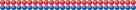

── Attaching core tidyverse packages ──────────────────────── tidyverse 2.0.0 ──
✔ dplyr 1.2.1 ✔ readr 2.2.0
✔ forcats 1.0.1 ✔ stringr 1.6.0
✔ ggplot2 4.0.3.9000 ✔ tibble 3.3.1
✔ lubridate 1.9.5 ✔ tidyr 1.3.2
✔ purrr 1.2.2
── Conflicts ────────────────────────────────────────── tidyverse_conflicts() ──
✖ dplyr::filter() masks stats::filter()
✖ dplyr::lag() masks stats::lag()
ℹ Use the conflicted package (<http://conflicted.r-lib.org/>) to force all conflicts to become errors
library(dslabs)
library(patchwork)
library(kableExtra)
Attaching package: 'kableExtra'
The following object is masked from 'package:dplyr':
group_rows
Review
population - The entire collection of observational units we are interested in
population \(\rightarrow\) parameter
sample - The subset of the population on which we record data
sample \(\rightarrow\) statistic
Polling and Sampling
We want to predict:
- \(p\) - proportion of blue beads
- \(1-p\) - proportion of red beads
- \(p - (1-p) = 2p - 1\) - the spread, or difference between blue and red proportions
We sample \(N\) balls randomly.
Polling and Sampling
set.seed(2043798)
s25 <- sample(rep(c("red", "blue"), c(201,214)), 25, replace = F) |> table()
options(digits = 4)
Let \(N=25\). We sample 8 red and 17 blue balls.
\[
\begin{align}
\hat p\text{ (or }\overline X\text{)} & = 17/25 & = 0.68\\
1-\hat p & = 8/25 &= 0.32\\
2\hat p - 1& = 34/25 - 1 &= 0.36\\
\text{SE}[\hat p] = \sqrt{\frac{\hat p (1-\hat p)}{N}} & = \sqrt{\frac{\frac{17}{25}\cdot\frac{8}{25}}{25}} &= 0.0933
\end{align}\]
Sample Size and Standard Error
set.seed(230947)
s50 <- sample(rep(c("red", "blue"), c(201,214)), 50, replace = F) |> table()
Let \(N=50\). We sample 25 red and 25 blue balls.

\[
\begin{align}
\hat p\text{ (or }\overline X\text{)} & = 25/50 & = 0.5\\
1-\hat p & = 25/50 &= 0.5\\
2\hat p - 1& = 50/50 - 1 &= 0\\
\text{SE}[\hat p] = \sqrt{\frac{\hat p (1-\hat p)}{N}} & = \sqrt{\frac{\frac{25}{50}\cdot\frac{25}{50}}{50}} &= 0.0707
\end{align}\]
Estimating Standard Error
true_p <- 214/415
se <- tibble(n = seq(10, 415, 1),
se = sqrt(true_p*(1-true_p)/n))
se_data <- se |>
crossing(tibble(rep = 1:100)) |>
mutate(sample = map_int(n, ~sum(sample(rep(c("red", "blue"), c(201,214)), ., replace = F) == "blue")))
se_data <- se_data |>
mutate(sample_p = sample/n, sample_se = sqrt(sample_p * (1-sample_p)/n))
ggplot(data = se, aes(x = n)) +
geom_point(data = se_data, aes(y = sample_se, color = "Estimated SE"), alpha = .05) +
geom_line(data = se, aes(y = se, color = "True SE")) +
scale_color_manual("", values = c("black", "red")) +
guides(color = guide_legend(override.aes = list(alpha = 1))) +
ylab("Standard Error") + xlab("Sample Size") +
theme(legend.position = "inside", legend.position.inside = c(.8, .8), legend.title = element_blank())
ggplot(data = se_data, aes(x = n, y = se- sample_se)) +
geom_point(alpha = 0.5) +
ylab("Error in SE estimate") +
geom_smooth(se = F)
`geom_smooth()` using method = 'gam' and formula = 'y ~ s(x, bs = "cs")'
- Using \(\text{SE}[\overline X]\) instead of \(\text{SE}[p]\) adds in a little bit of error but is usually fairly close.
- The other option?
Use \(p=0.5\), which is the worst-case scenario for the SE, as \(p(1-p)\) is maximized at \(p=0.5\)